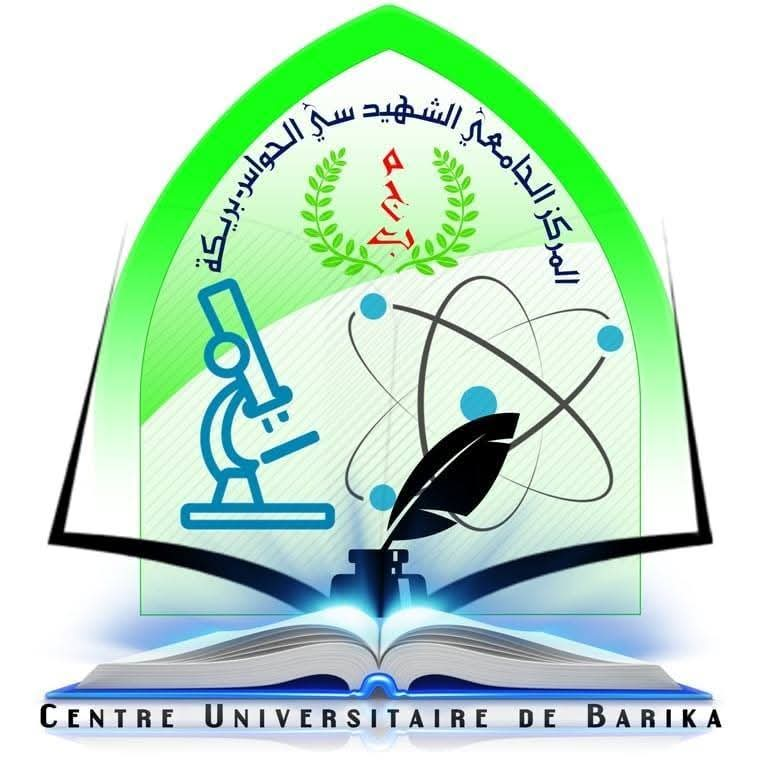

مخصص للطباعة والكتابة اليدوية (3 صفحات A4)
République Algérienne Démocratique et Populaire
Ministère de l'Enseignement Supérieur et de la Recherche Scientifique
Centre Universitaire de Barika
Institut des Sciences
Département de Socle Commun ST
Matière: TP Chimie 1 (S1)

الجمهورية الجزائرية الديمقراطية الشعبية
وزارة التعليم العالي والبحث العلمي
المركز الجامعي بريكة - سي الحواس
معهد العلوم والتكنولوجيا
قسم العلوم والتكنولوجيا
تحديد كمية المادة للأنواع الكيميائية وتطبيقات تحضير المحاليل